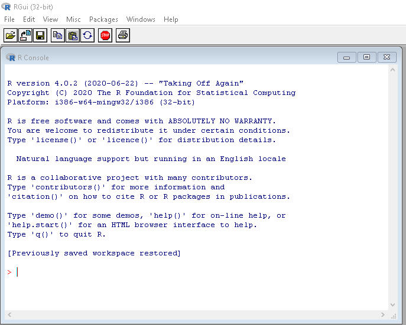

Chapter 2 Orientation in RStudio
We said in chapter 1 that you need first to install R and RStudio. These are separate pieces of software: R does all the statistical and graphics stuff, while RStudio provides the graphical user interface.
Here we take a brief look around the RStudio interface. Use ‘RStudio/Help’ to get more detailed help.
The RStudio interface can be customised almost beyond recognition. We’ll use a mix of styles in the book so that you don’t get too fixed, but it’s probably helpful to your colleagues not to re-order the main four panes, otherwise they’ll find looking over your shoulder or screen-sharing a disorienting experience.
A basic MS Windows RStudio looks something like this.
RStudio
The main panes of the screen are:
- Top left: source code, shown as a number of tabs one for each file;
- Bottom left: the ‘console,’ which is a scratchpad for entering code, and where log output is usually shown (and some other tabs which we don’t need here);
- Top right: the ‘environment’ and ‘history’ tabs are of main interest. Environment is where you can explore all the data you’ve created. History is useful for re-doing something, particularly as you can search for code.
- Bottom right: This has several important tabs
- Files: for exploring files within a project, can be quicker than using the windows explorer
- Plots: is where plots will appear (usually)
- Packages: is for checking which packages are installed, or active (see TBD)
- Help: all the details of the functions that you will need - this is usually quicker to use than googling a function (though the help files come up when you google, from various providers).
2.1 File types
You will see lots of different file types (ie file extensions). The main ones to remember are:
.R,.Rmd: both contain R code, though.Rmdis actually ‘r markdown’ which is a mix of code and text;.RProj: contains an R ‘project’ - if you see one of these in the directory, this is the one to open - everything else works from there (see TBD);.rda,.RDS: are different types of data file. R works easily also with.csvand.xls(x)see TBD.
2.2 What’s gone wrong?
If you see a window like this, then you have started R rather than RStudio. That is a GUI and you can use it to execute R code, but you’ll find RStudio easier for all but the quickest snippets of code. 
If it keeps on happening you will find it helpful to associate R files (.R, .RMD and others) with RStudio rather than R.
If you get errors saying a certain package is only compatible with version xx and higher (of R), and you think you’ve recently updated, are you sure you updated R rather than RStudio? The RStudio version is found from the top menu ‘RStudio/About R Studio,’ the R version is seen when you first start up (see the image just above), or is printed if you type version in the console (see TBD).
If you’re searching in ‘help’ and a function isn’t appearing, for example in the drop-down as you type, it is probably because it comes from a package that isn’t loaded. You can finish typing, and the system will search and may find it, but also some other less good matches. Or if you know the package name, you can type ?ggplot2::geom_line for example, in the console to go straight there.